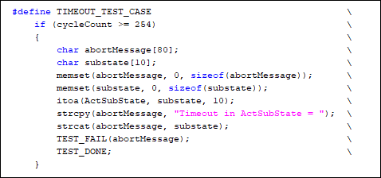
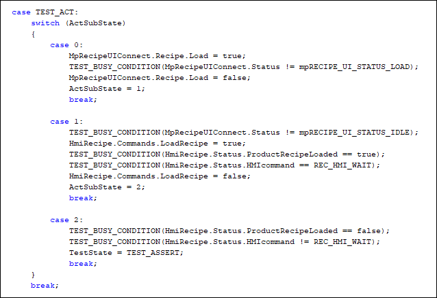

B&R Unit Testing
Introductory Resources
For a step-by-step guide on how to set up and use B&R Unit Testing, refer to the guide from AutomationCON 2021. This has been included as a template file.

Dedicated Unit Test Configuration
The unit test tasks should not be deployed on a commissioned machine. Therefore, you should have a dedicated configuration in the AS project for unit testing.

Tips for Writing in C
B&R Unit Tests must be written in the C programming language. The task under test can be written in any programming language (ST, ladder, etc), but the tests themselves have to be in C.
Here are a few tips / tricks to help you transition quickly from ST to C:
| Topic | ST | C |
|---|---|---|
| Assignment operator | := | = |
| Address reference | ADR(var) | &var |
| End of line | ; | ; |
| Comment | // | // |
| Equality | = | == |
| Inequality | <> | != |
| “And” operator | AND | && |
| “Or” operator | OR | |
| “Not” operator | NOT | ! |
| String boundary | ‘ | “ |
| Dynamic variable | Link | Link |
For loop:
| ST | C |
|---|---|
| FOR Var1 := 1 TO 9 DO //code END_FOR |
for (Var1 = 1; Var1<10, Var1++) //code } |
Case statement:
| ST | C |
|---|---|
| CASE (stateVar) OF STATE1: //code STATE2: //code END_CASE |
Switch (stateVar) { case 1: //code break; case2: //code break; } break; |
If statement:
| ST | C |
|---|---|
| IF (condition) THEN //code ELSIF(condition) THEN //code ELSE //code END_IF |
if(condition) { //code } else if(condition) { //code } else |
Also note in C if (i = 0) is perfectly valid and assigns 0 to i and evaluates as false. Some people recommend reversing the statement so that the compiler will catch mistypes (e.g. if (0 = i) would not compile if you really meant if (0 == i))
And for loop exit condition is always <= in ST but you can decide < or <= in C.
Built-In Tests
The following tests are built into the B&R Unit Testing framework. Use cases are provided in the template files.
-
Setup & Teardown
- These tests are used to clean things up before / after the tests run. More specifically:
- _SETUP_TEST: Runs before each individual test
- _TEARDOWN_TEST: Runs after each individual test
- _SETUP_SET: Runs before the entire group of tests in the test suite
- _TEARDOWN_SET: Runs after the entire group of tests in the test suite
- These tests are used to clean things up before / after the tests run. More specifically:
-
Cyclic code
- The _CYCLIC_SET test code is called once per program cycle, as long as the test set is active (in progress)
- Use cases:
- Increment a timeout counter
- Call mapp FUBs that are under test
Test Structure
Each test should have 3 fundamental sections:
- Arrange
- Sets up the test case
- Any required settings, parameters, or other preparation needed for that specific test case should be performed here
- Act
- Calls the function to be tested
- Act steps should cover the main thing to be tested
- Assert
- Assert expected outcome
For simple tests, this can be accomplished as shown below:
_TEST testCase1(void)
{
// Arrange
instMyCalc.CalcOperator = splMyCalcOPERATOR_ADD;
instMyCalc.Param1 = 1;
instMyCalc.Param2 = 2;
// Act
MyCalculator(&instMyCalc);
// Assert
TEST_ASSERT_EQUAL_INT(3, instMyCalc.Result );
TEST_ASSERT_EQUAL_INT(ERR_OK, instMyCalc.Status );
}
For more advanced tests or tests for asynchronous function blocks, these sections should be implemented in a case statement.
This allows the FUBs to be called until they complete the asynchronous action (since they are called within _CYCLIC_SET).
For example:
_TEST PowerOn(void)
{
TIMEOUT_TEST_CASE
switch (TestState)
{
case TEST_ARRANGE:
TestState = TEST_ACT;
break;
case TEST_ACT:
switch (ActSubState)
{
case 0:
AxisControl.Command.Power = true;
ActSubState = 1;
break;
case 1:
TEST_BUSY_CONDITION(AxisControl.Status.Busy == true);
TestState = TEST_ASSERT;
break;
}
break;
case TEST_ASSERT:
TEST_ASSERT(AxisControl.Status.IsPowered);
TEST_DONE;
break;
}
TEST_BUSY;
}
Return Statements
Each test must always provide a return statement in every scan of the test. The possible return statements are Busy, Abort, or Done (full list shown below).

It is common practice to put TEST_BUSY outside of your case statement so that the default return statement is that the test is busy.
When one of these return statements is executed, the test immediately ends. No subsequent code will run. Therefore, in the screenshot below, we don’t technically need the “break;” after TEST_DONE, but it is included for clarity nonetheless. This also means that you should have your FUB calls at the top of the test, rather than at the end.

Use Case: Busy and Abort Return Statements
If you are testing asynchronous function blocks, utilize the Busy and Abort conditions to allow for the FUB to finish processing.
Use TEST_BUSY_CONDITION(fub.Busy == false) or TEST_BUSY_CONDITION(fub.Status == 65535) to wait for the FUB to finish being busy.
Use TEST_ABORT_CONDITION(fub.Status != 0) to abort the test in the event of an error.
Examples:
- DirInfo(&DirInfo_UT);
- TEST_BUSY_CONDITION(DirInfo_UT.status == 65535);
- TEST_ABORT_CONDITION(DirInfo_UT.status != 0);
Test Asserts
An assert statement is used to declare the expected/passing result of the test.
The most basic assert is TEST_ASSERT(condition), where the asserted condition is a Boolean value.
A full list of available asserts is availabne here.
Timeout Counter
It recommended to implement a timeout counter to fail a test if it gets stuck for too long. The test will be failed if the counter exceeds a certain value.
To implement the timeout counter:
- Copy the code for the TIMEOUT_TEST_CASE macro (within the template test file) to the top of your test suite file (right beneath the #include section). This macro will force the test to fail if the cycleCount is exceeded. The rest of the tests in the test suite will subsequently run as usual.
- Adjust the cycleCount to a value that makes sense for your testing
- Declare the following variables test task variable file:
- “ActSubState” of type USINT
- “cycleCount” of type USINT
- Within _CYCLIC_SET, increment cycleCount (cycleCount++)
- Call TIMEOUT_TEST_CASE at the top of each test
- Now, each test will be protected from getting stuck / never ending

Strategy for UIConnect Commands in Tests
If you need to use commands from a UIConnect structure in a test, you must follow this order of operations within a case statement:
- Trigger the command
- Wait for the status that the command is in progress (whatever that may be)
- Wait for it to return to idle
- Then SOMETIMES wait for it to refresh (it’ll automatically do this depending on what command you run)
- Wait for it to return to idle AGAIN
- Then you can move on in your testing process
Not following this order of operations causes intermittent failures.
Example: Note that the UIConnect case statement is embedded within the TEST_ACT case of the overall case statement.

Variable Mapping File
In most (if not all) tests, you will need to use a value of a local variable within the task under test within the unit test. To get that variable data into the unit test task, use a Variable Mapping File (.vvm).
Steps:
- Add the local variable and type file of the task under test as a reference to the unit test task
- This way, the unit test task has its own instance of every variable within the task under test
- Add a Variable Mapping File (.vvm) to the unit test configuration
- Within the .vvm, map the local variables from the task under test to the equivalent local variable instances within the unit test task.
- Variable mapping goes in both directions: inputs from the task under test to the unit test task, and outputs from the unit test task to the task under test

- Note that you cannot directly map function block outputs from the task under test to the unit test task function block outputs
- As a result, you need to make a "middle man" structure to capture the value of the FUB outputs and bring them in to the unit test task
- In the screenshot above, this corresponds to the MpBlockStatus structure in the unit test task
Debugging
Breakpoints can be set directly in the unit test code. Therefore, when a unit test fails, use the debugger to troubleshoot the problem.

Code Coverage
With code coverage enabled you can see how much of you code is covered by your testing. This can help assess the quality of your test cases.
Code coverage in Automation Studio only works for C/C++ tasks/libraries and GCC 6.3.0
Usage:
- Install gcov. See here for installation instructions
- Add the Unittest solution with version 2.0.1.65
- Add the EmbGcov and EmbGcovW library ( Make sure to deploy both libraries in the PLC )
- Change the GCC version to '6.3.0' and add the '\Logical\Libraries\EmbGcov' to the additional include directories

- Add the '--codecoverage' to the Additional build options in the task and or library

- Extend the TEARDOWN_SET
- Include the EmbGcov.h
- Add the function 'EmbGcovExit();' so that after the test is complete the data is saved to the harddrive.
- In case of a pure C task add a dummy C++ file with the bur_heap_size declaration. This will add some implementations we need.
- In case you want to use code coverage on a library add a dummy function with the 'EmbGcovExit();' as well. ( If it's a dynamic library please add the function in a CPP file )
- Run the python script to generate the report